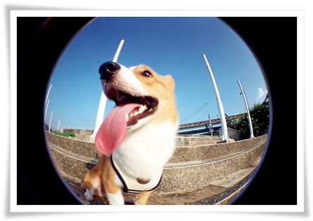
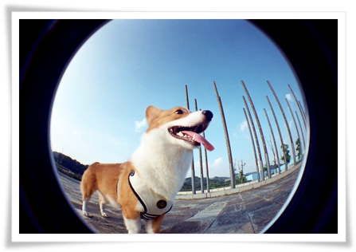
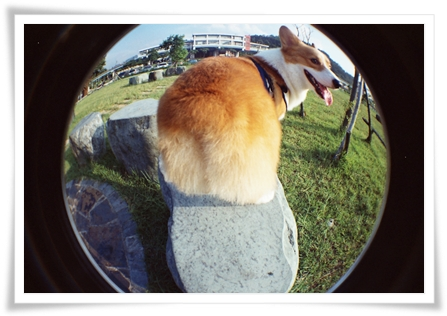
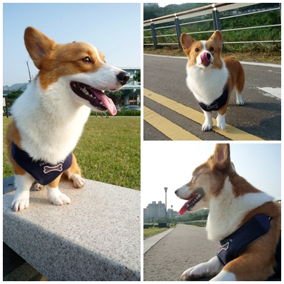
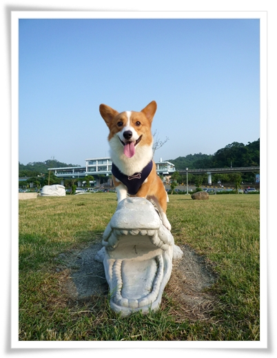
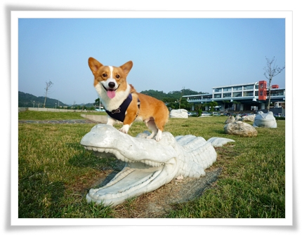
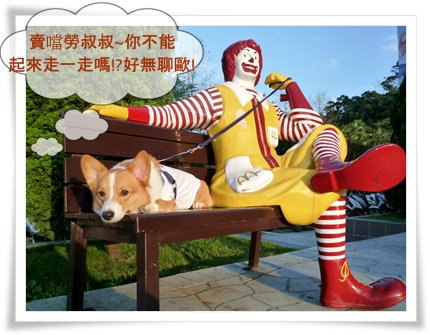

最近用魚眼幫摩卡卡拍照~這是我最喜歡的一張了
只有這張最有魚眼的fu~

要近一點拍才好玩啊!!但是只要我正對著這小子的臉，他立刻會轉到別的方向，
因為他覺得我擋到他的視線了，小氣鬼！害我好難拍

這張跟地上的腳踏車圖案拍我覺得很有意境耶！
有人喜歡嗎？

短腿狗的天空長什麼樣！？
整個人趴在地上往上拍，旁邊的伯伯還以為我是攝影師之類的(笑)
一直好奇我手中的魚眼，不過解釋了老半天，老伯也是有聽沒有懂啊!

話說拍攝的地方是摩卡卡散步的秘密基地歐！哈哈哈（自以為）
地點是在木柵動物園對面的河堤公園，改成停車場後，
旁邊有一大片綠地整理的很乾淨，可以騎腳踏車、散步、溜狗

天氣好的時候我都會帶卡卡來這跑跑，運動一下！
我們都是平日才來的，人很少狗也很少，放開他比較放心
假日應該就很多人了！畢竟動物園也是台北熱門的觀光景點

秋天的天氣很涼爽，日光浴中的摩卡卡看起來很舒服，
晴天時光線也充足，抓他來這拍魚眼燒底片很適合

偶爾也會訓練一下在外面的穩定度，待在框框裡等待！
不過只要看到小鳥就破功了！
因為那邊有好多小鳥跟白鷺鷥不時會飛來飛去，哈哈

還有騎河馬！？

歐！是鱷魚啦！！
本來想把狗頭塞進去的，但有人就是喜歡高高在上的感覺，不給塞！！

中場休息還可以到對面賣噹噹吃吃喝喝，
 (我就說運動量這嘛大怎嘛還不會瘦的母子倆)
(我就說運動量這嘛大怎嘛還不會瘦的母子倆)
不方便帶他進去點餐時，我就會請賣噹勞叔叔幫我牽一下摩卡卡
可是他不太爽叔叔都不起來走動！

賣噹勞叔叔：我在上班耶～被fire，肯德G爺爺也不會錄用我！
嘖嘖～不能冒險

那天還遇到一隻小貓，應該才5.6個月大吧，小小一隻
肚子餓了跑出來找東西吃，所以我拿了僅有的G塊請他吃
本來以為他不吃的，不過應該是肚子餓了還是嗑了起來
不過他警覺心很高，一有聲音就跑開，乖孩子！希望你能平安長大嘍！

最後我要跟大家分享一下本格主角－小眼眼柯基摩卡卡
他的眼睛小歸小，但可是烔烔有神呢！是吧
咖啡色的眼珠加上淡淡咖啡色的眼線 (是巴比布朗的保證不會暈)
我確定了~摩卡卡應該是混血兒～～

媽媽終於瘋了!!!!!!